Um KV, oito camadas
A cena é montada em 3D, então cada elemento existe por conta própria: céu, nuvens, água com reflexo, espuma, título, marca e os dois peixes. É dela que saem o KV estático em qualquer tamanho, o vídeo, os stories e o encarte, sem refazer a arte.
Entregas: KV em 4K e 1080p, as oito camadas em PNG, a versão submersa e a animação.
Do KV para o celular
Na vertical, a superfície vira o cabeçalho: céu e título em cima, a linha d'água atravessando a peça e as ofertas no fundo do mar. O preço vem numa boia, a assinatura da campanha.
Feed e carrossel
No feed, a mesma água. No carrossel, a capa convida a mergulhar e cada cartão mostra uma seção de ofertas.
O encarte que muda sozinho
O tabloide continua com a versão impressa e o PDF de sempre, e ganha também uma versão em link, para abrir no celular. As ofertas saem de um único arquivo: muda o preço ali, mudam juntos o encarte, os stories e os posts. Troque a semana aqui embaixo e veja as peças lá em cima mudarem também.
- Uma fonte de ofertas para o impresso, o digital e as redes.
- Meu Big Box: as ofertas exclusivas do app chegam marcadas.
- Espaço para ações promocionais, se fizerem sentido para a loja. Toque num produto para ver um exemplo com contagem regressiva.
Produtos, preços e a oferta relâmpago são só ilustração do que a página permite. Nenhuma mecânica de desconto está sendo proposta.
Como chegamos aqui
O ponto de partida
Dois peixes que já são da casa. A regra era refazê-los em 3D sem perder a cara deles.
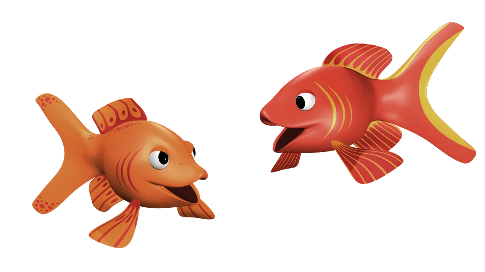
Ficha de personagem
Antes do 3D, cada peixe ganhou uma ficha com as vistas de frente, de lado e de costas, conferidas com o original.
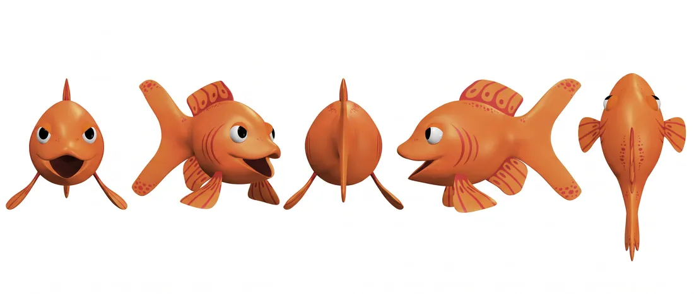
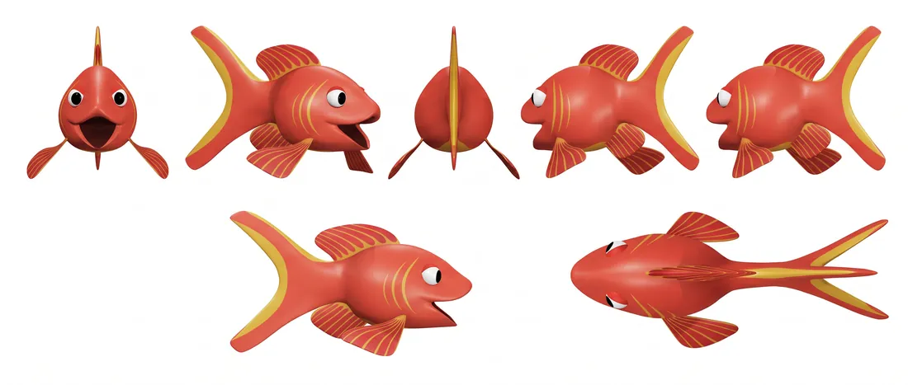
A malha 3D
O modelo sem cor: a malha que dá forma ao corpo, às nadadeiras e às guelras. É ela que se mexe quando o peixe nada e pisca.
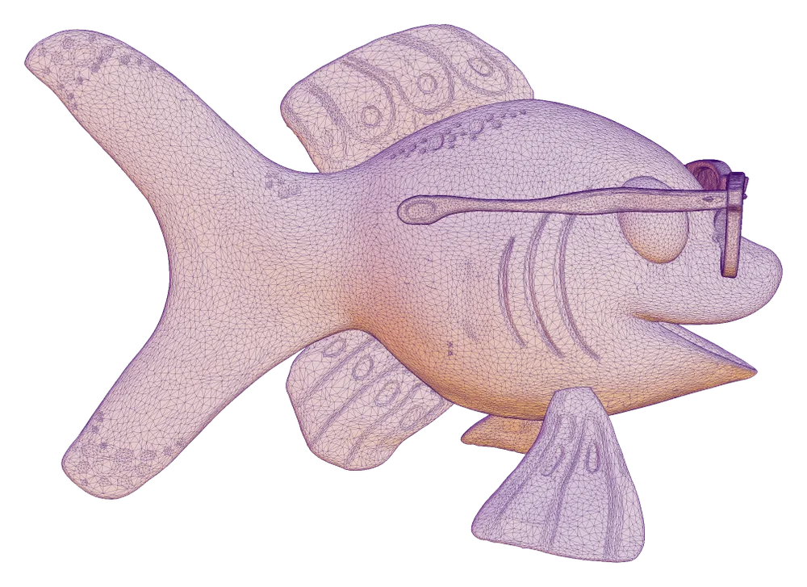
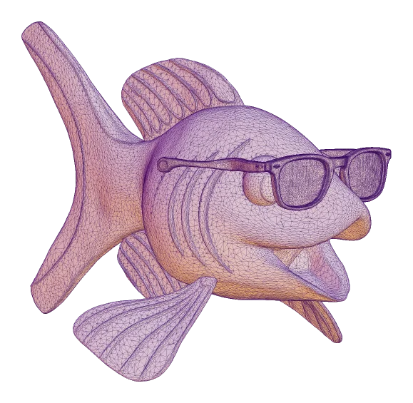
Cor e acabamento
Com a textura, os detalhes foram retocados um a um: olhos, listras e guelras iguais aos do original, num acabamento liso de brinquedo.
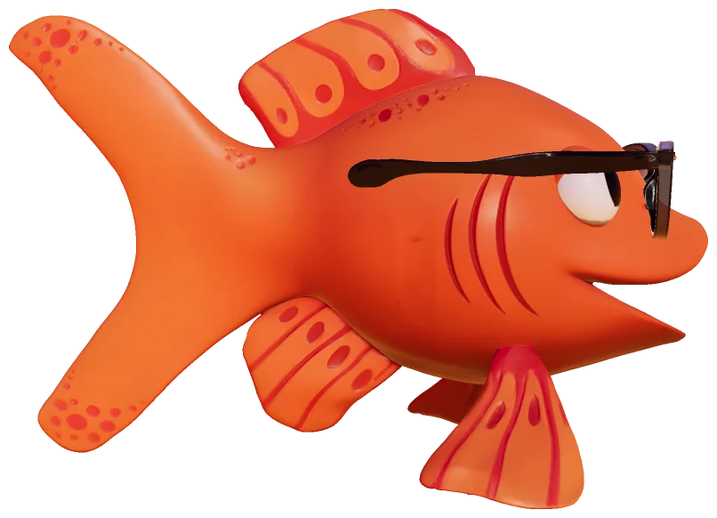
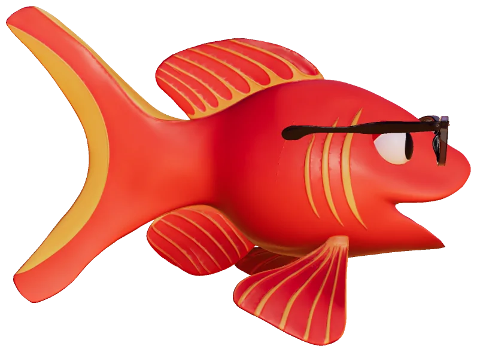
Óculos de verão
Construídos em 3D e encaixados no rosto de cada peixe: as hastes apoiam na cabeça e a lente escura ainda deixa ver os olhos.
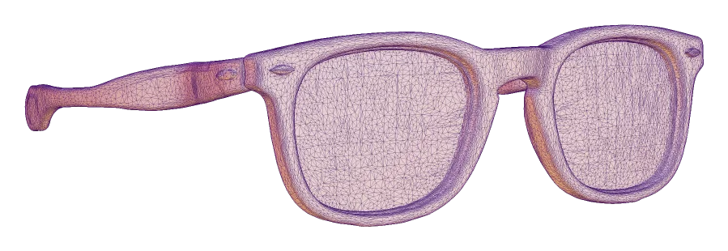
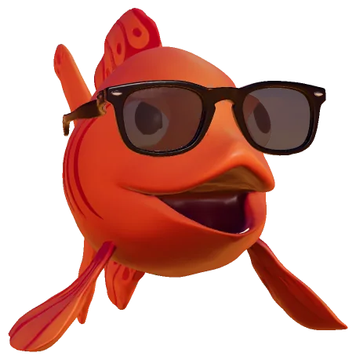
O resultado
Dois KVs saídos da mesma cena: o estático, com os peixes olhando o título, e o submerso, com eles já dentro d'água.
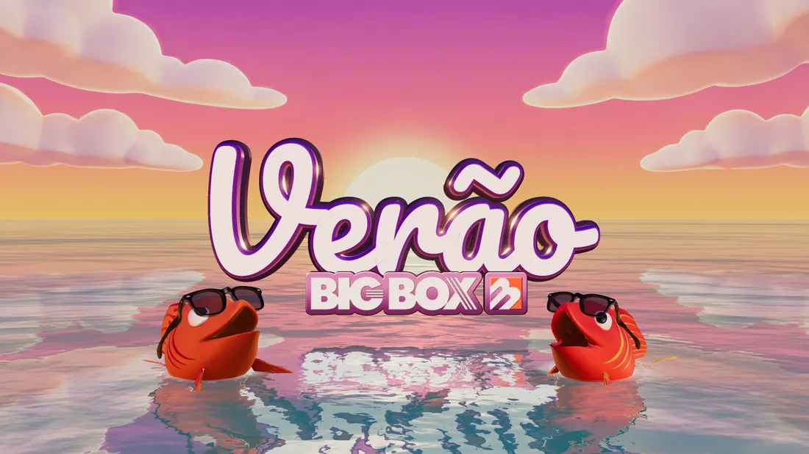
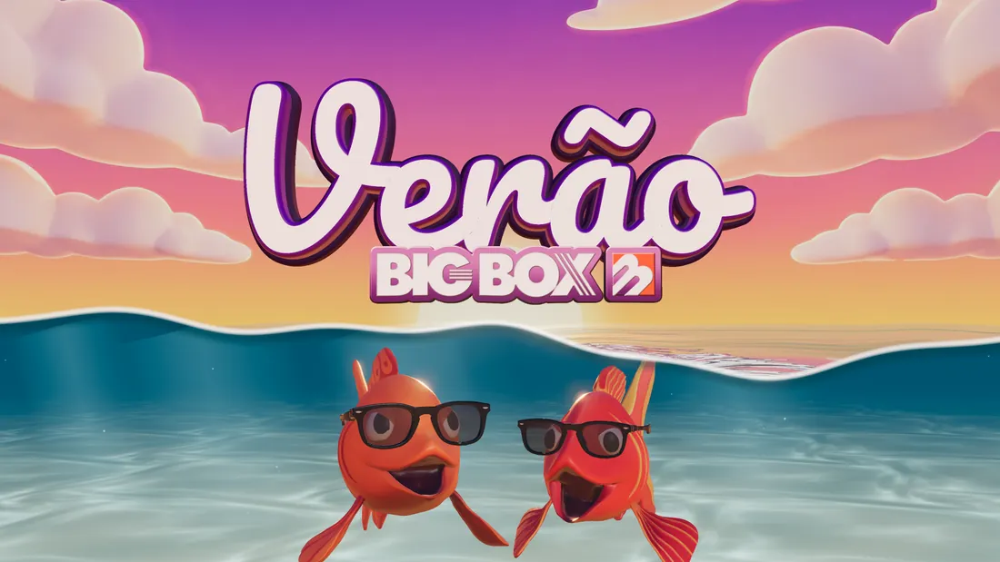
Uma campanha que continua viva
KV que vira vídeo
A mesma cena gera filme para TV de loja, reels e telão, em qualquer formato.
Encarte sem refazer arte
Muda o arquivo de ofertas, mudam o tabloide, os stories e os posts.
Mascotes o ano todo
Os peixes 3D trocam de acessório: gorro no Natal, orelhas na Páscoa, chapéu de festa no aniversário.
Espaço para promoções
Se a loja quiser: destaque do dia, contagem regressiva, lista de compras. A página aceita sem refazer o layout.
Fim do mergulho
Proposta criativa · Verão Big Box 2027. Produtos e preços ilustrativos.